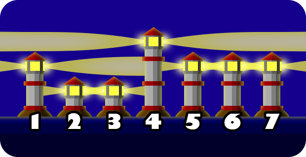
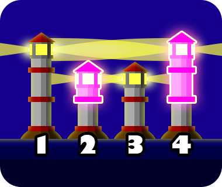

Pada proyek Pak Dengklek, terdapat $N$ buah mercusuar yang berjajar membentuk garis lurus. Mercusuar-mercusuar tersebut dinomori dari $1$ sampai $N$ dari barat ke timur. Tinggi dari mercusuar $i$ adalah $A_i$ meter.
Terdapat sebuah pemancar di atas setiap mercusuar. Pemancar pada mercusuar $i$ memancarkan sinar lurus ke barat dan ke timur pada ketinggian $A_i$ meter. Dua buah pemancar pada dua mercusuar berbeda $p$ dan $q$ ($p \ne q$) akan saling menyinari jika dan hanya jika:
Pak Dengklek ingin agar setiap pemancar tersinari oleh setidaknya satu pemancar lain. Sebagai contoh, perhatikan ilustrasi berikut.

Di sini, pemancar pada mercusuar $2$ dan mercusuar $3$ saling menyinari, begitu pula dengan pemancar pada mercusuar $5$ dan mercusuar $6$ dan pemancar pada mercusuar $6$ dan mercusuar $7$. Akan tetapi, mercusuar-mercusuar tersebut tidak memenuhi syarat, karena pemancar pada mercusuar $1$ dan mercusuar $4$ tidak tersinari oleh pemancar lain.
Untuk memenuhi syarat tersebut, Pak Dengklek dapat meningkatkan tinggi mercusuar mana pun dengan biaya satu juta rupiah per meter. Pak Dengklek dapat meningkatkan tinggi dari nol atau lebih mercusuar. Bantulah Pak Dengklek menghitung total biaya minimum yang harus dikeluarkan untuk memenuhi syarat tersebut!
Masukan diberikan dalam format berikut:
N A1 A2 … AN
Keluarkan sebuah baris yang berisi sebuah bilangan yang menyatakan total biaya minimum dalam juta rupiah.
6 2 1 1 3 2 2
1
Pak Dengklek dapat meningkatkan tinggi mercusuar $1$ dari $2$ meter menjadi $3$ meter, dengan biaya $1$ juta rupiah.
4 3 1 2 1
3
Pak Dengklek dapat meningkatkan tinggi dari mercusuar-mercusuar sebagai berikut.
Total biaya yang diperlukan Pak Dengklek adalah $1 + 2 = 3$ juta rupiah. Setelah semua perubahan tersebut dilakukan, tinggi mercusuar berturut-turut dari barat ke timur adalah $3$, $2$, $2$, $3$. Dengan demikian, pemancar pada mercusuar $1$ dan $4$ akan saling menyinari serta pemancar pada mercusuar $2$ dan $3$ juga akan saling menyinari seperti yang diilustrasikan dengan gambar berikut.

Pak Dengklek juga dapat mengubah tinggi mercusuar secara berurutan dari barat ke timur menjadi $3$, $3$, $2$, $2$ dengan total biaya yang sama.
8 17 10 13 11 11 8 14 14
11
Pak Dengklek dapat meningkatkan tinggi dari mercusuar-mercusuar sebagai berikut.
Total biaya yang diperlukan Pak Dengklek adalah $7 + 1 + 3 = 11$ juta rupiah. Setelah semua perubahan tersebut dilakukan, tinggi mercusuar berturut-turut dari barat ke timur adalah $17$, $17$, $14$, $11$, $11$, $11$, $14$, $14$.